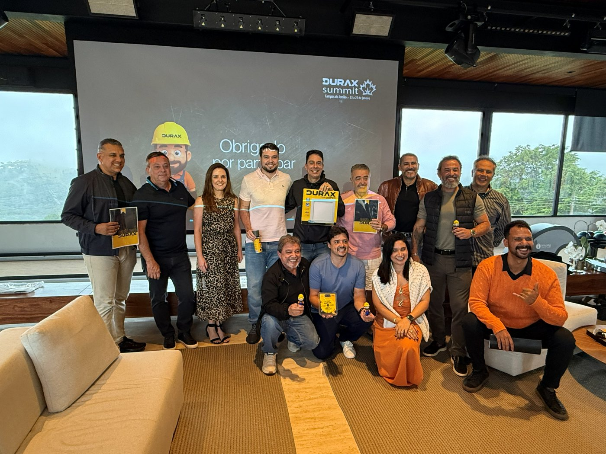

Feita para quem constrói
A Durax é a marca de ferramentas e materiais para construção civil do Grupo Siaga. O portfólio vai de fixadores e ferramentas manuais a material elétrico, iluminação, hidráulica e solda, com foco no giro das lojas de material de construção e no uso diário do profissional de obra.

Qualidade na origem
Equipes de sourcing e qualidade na China e em Hong Kong acompanham a produção e inspecionam os lotes antes do embarque.
Estoque no Brasil
Centros de distribuição no país para que a revenda reponha rápido e não perca vendas por falta de produto.
Parceria com a revenda
Mix, catálogo e material de ponto de venda pensados a partir do sell-out de cada loja.
Operação global, foco no varejo brasileiro
Escritórios no Brasil, China, Índia, EUA e Hong Kong.
A Siaga atua em comércio internacional através de parceiros estratégicos.
Oferecer a melhor entrega de produtos em processo ágil e eficaz, fundamentado em performance de sell-out, garantindo as melhores margens para o negócio dos clientes.